Hello! My name is Roy, where you will learn Minecraft. Minecraft is just like our world, except there are tools and monsters that doesn't exist. When you play in creative, you can create anything such as the statue of liberty out of copper blocks. If you are in survival, you can die. I will tell you step by step how you will survive. Step 1: chop some wood. If you can see some trees, break some lumber out of your bare hands. Once you get a lot of wood, craft into a crafting table and make yourself wooden tools to protect yourselves. Once you get stone out of your wooden pickaxe, make some stone tools out of your crafting table, and you will survive for now. Here are some crafting recipes how to make an axe, a pickaxe, swords, and armor. On the upper side, you will be able to see videos that I like, things that you might like.
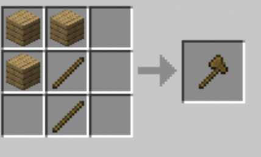 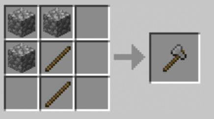 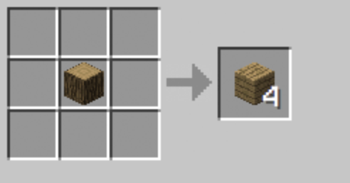 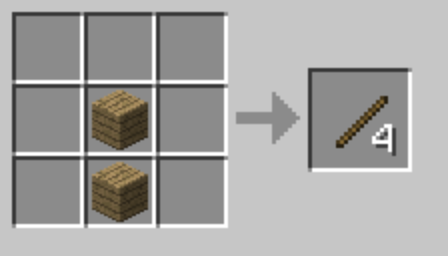 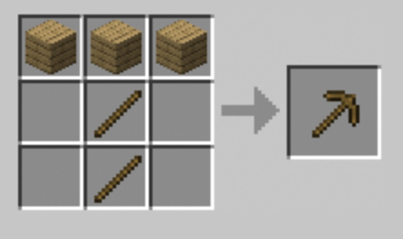 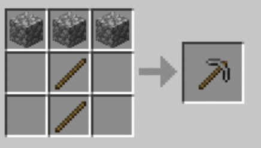 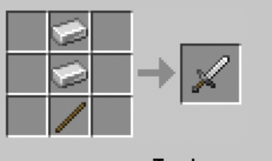 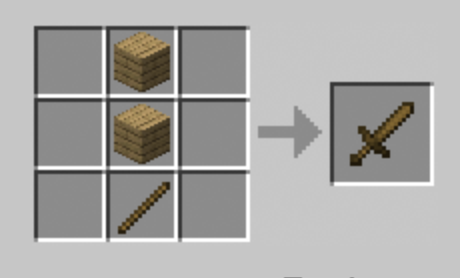 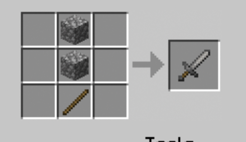 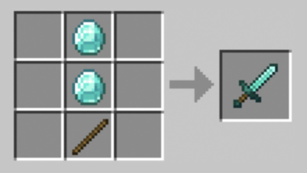 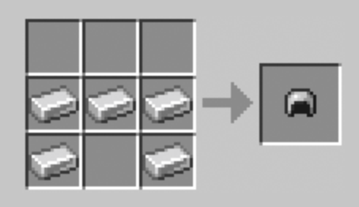 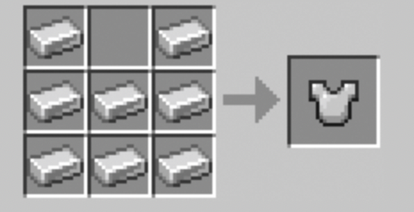 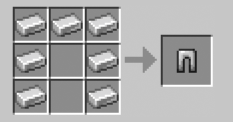 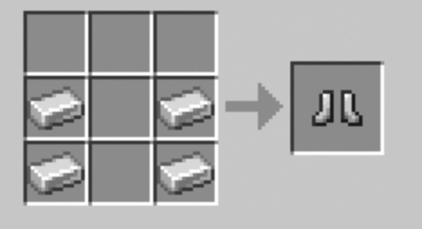 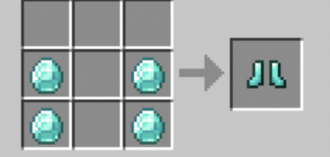 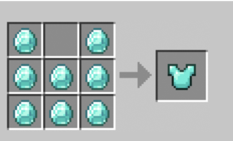 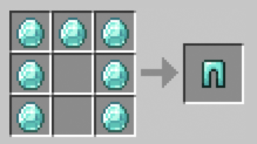 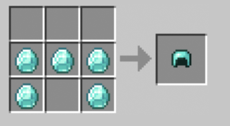Step 2: Build a shelter. It's bad enough stranded alone. It's very hard if there are monsters chasing you, hoping to kill somebody. Create a shelter by wood, and cover the ceiling by the height of two blocks high. Then make a stone shelter later on because a monster called a creeper can blow up your house easily, and the appearance looks like a green monster, dotted with black. If you even managed to get enough supplies, make a cool shelter such as a picture of a skeleton, or make a secret underground bunker where there are all sorts of traps and parkour.
Step 3: get some food. There is a hunger bar, just as if you are hungry. There are different kind of food to eat such as beetroot, raw beef, grilled chicken, dried kelp, cake, or pumpkin pie which can flavor all sorts of health. If you don't eat it, your hunger bar will resume decreasing until there are none, and you will go done with a health of a half of a heart, and you have ten hearts. Grilling can make hunger bars increase, and also cakes can last for a long time. The pumpkin pie can increase all your hunger bar, so save some for your snack. Make sure to get food all the time, and capture pigs, cows, sheep, chickens, and farm crops such as wheat, beetroot, potatoes, carrots, melons, and pumpkins.
Step 4: get some anxoloti, dogs, and cats. The dogs, you can tame them by pressing the button while holding a bone to a wolf. They will protect you from spiders and skeletons, or anything that hurts you or you attack them unless they are sitting. As for the anxoloti, you can tame them by scooping them up in a water bucket. They are like pets who can live underwater. They can attack drowned, elder guardians, guardians, or even dolphins! As for the cats, they would protect you from creepers, that explode when there are one or more player comes near, but creepers are afraid of cats. No more random explosions!
Step 5: Get some redstone. Redstone is the creation of electricity, so with redstone people could make a wall going straight up, or making a TNT cannon, or maybe have an infinite amount of netherite! You can see this video of "Basic Redstone", and "Redstone" by alan becker.
Step 6: If you are so lazy and want some cool and monstrous monsters, then change your setting to hard mode. At first, it will be normal, and you can change into peaceful which will make all monsters disappear. If you change into easy, it will only damage you one heart in zombies. When normal, it will do more damage but it will not break doors. However, once it becomes hard, zombies can break doors and make a whole village infected with zombie virus. In case if you couldn't survive, make a high land, and put all your valuables, and then make a small hut for you to live until daytime.
Step 7: Enchant your weapons and armor. You would need it because the weapons would be effective to mobs. Get your diamonds, make diamond armor and gears, so you could enchant it. First get an enchanting table by crafting four obsidian, two diamonds, and a book from the crafting table. Next, get Lapiz Lazuri, the ones that are pure blue. Those could enchant your armor by a bit, but place some bookshelves around the placed enchanting table, and you could get max enchantments such as sharpness five used in a sword, that could almost two shot any mob. You could enchant books, and soon you would get full diamond armor enchanted, along with diamond tools. The best enchantments on anything are mending and unbreaking Three. Mending, if you get experience with almost broken armor, the armor would heal. Unbreaking could make your durability on armor longer, and three could make it like more than a thousand.
Step 8: Get some netherite. They are very powerful items, and they could make diamond to super diamond. First, go to the nether and explode some beds or TNT. If you explode enough you could find Ancient Debris, which looks ANCIENT. Mine it only with a diamond pickaxe, and you will get Debris. Once you do, you could smelt it and make into the ancient debris scraps. Make a crafting table, and get netherite ingot by crafting four ancient debris scraps and four golden ingots. Have a smithing table, put the diamond armor or diamond tool, put the netherite ingot, and it will craft netherite armor or netherite tools.
Step 9: If hard mode isn't enough for you, go to the nether or the end. The nether is a place with only fire and lava. It will be fun, but be careful out there, because some monsters shoot fireballs, some damage you with wither effect, or make you burn with insanity. If it is still not enough, make a wither using 4 soul sand like a T, and in top of the - put three wither skeleton, then it will make a hideous three headed monster. When it becomes half health, it will mainly focus on you, then it will make a wither armor for him, then summon three wither skeletons. When it is defeated, it will boom one last time, then drop a nether star, which could make a beacon for good use and a nice trophy. If you're bored and you couldn't do anything, set out an adventure of defeating the ender dragon in the End dimension. In order to find the portal, you have to find the stronghold. If you need to find the stronghold, toss out some eye of ender. You can get it by sprinkling blaze dust in an ender pearl. Blaze dust comes from blazes, while ender pearls come from endermen. Carry at least 13 or more, because once you find the ender portal, you will have to place 12 eyes of ender. Good luck finding the stronghold though, because the stronghold is a maze just like the Labyrinth from Percy Jackson series. Get good supplies, tools, and food because the ender dragon is tough to fight. You will need to break the crystals first, the ones with the pink moving crystals with strange red symbols. The reason why is because when you damage the dragon, one of the crystals would heal the dragon, so break all the ender crystals, then finish the ender dragon. It will drop an ender dragon egg, which is a great trophy to use. When you come back to the portal, there is a small poem from two unknown aliens. Or, you could defeat the ender dragon again by placing 4 ender crystals from 4 positions. You will go home victorious, and you will never ever go to the end again, unless if you need an elytra, a flying device that could let you glide through the skies. In order to find the elytra, you will need to go back to the end, and throw an ender pearl into the portal to the End Dimension, where it will glow purple. If you succeed, you will go to the end city. If not, you will fall to your death, so choose carefully or you could lose your stuff. Once you are there, find an ender ship, where you will find the elytra in a frame. Break it, and you will soon achieve it.